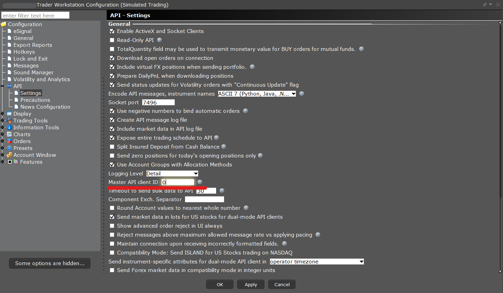

Each TWS API connection maintains its own ClientID to the host through the EClient.connect function. There are two unique client ID behaviors developers must be aware of:
The Master ClientID value can be assigned to 0 so that a connection can retrieve orders placed from TWS, FIX sessions, and all API connections on the account.

When an order is filled either fully or partially, the IBApi.EWrapper.execDetails and IBApi.EWrapper.commissionReport events will deliver IBApi.Execution and IBApi.CommissionAndFeesReport objects. This allows to obtain the full picture of the order’s execution and the resulting commissions.
commissionAndFeesReport: CommissionAndFeesReport. Returns a commissions report object containing the fields execId, commission, currency, realizedPnl, yield, and yieldRedemptionDate.
)
Provides the Commission Report of an Execution
def commissionAndFeesReport(self, commissionAndFeesReport: CommissionAndFeesReport):
print("CommissionReport.", commissionAndFeesReport)
IBApi.Execution and IBApi.CommissionReport can be requested on demand via the IBApi.EClient.reqExecutions method which receives a IBApi.ExecutionFilter object as parameter to obtain only those executions matching the given criteria. An empty IBApi.ExecutionFilter object can be passed to obtain all previous executions.
Once all matching executions have been delivered, an IBApi.EWrapper.execDetailsEnd event will be triggered.
Important: By default, only those executions occurring since midnight for that particular account will be delivered. If you want to request executions from the last 7 days, TWS’s Trade Log setting “Show trades for …” must be adjusted to your requirement. The IB Gateway is limited to only executions from the current trading day since midnight.
If a correction to an execution is published it will be received as an additional IBApi.EWrapper.execDetails callback with all parameters identical except for the execID in the Execution object. The execID will differ only in the digits after the final period.
By default, most ExecID values will return as 4-segment alphanumeric sequence to identify each unique order. In the case of Combo orders, you may encounter a 5-segment alphanumeric sequence which will be used to denote per-leg executions. As an example, if a 1:1 combo for 200 shares of both contracts is placed, the first leg may fill for 200 shares, then leg 2 may fill for 100 in one execution, and then another execution for leg 2 of 100. The fifth segment will distinguish between these unique inner-combo executions.
The Execution object is used to maintain all data related to a user’s traded orders. This can be used in both querying execution details and navigating received data. The details provided will display all information pertaining to the execution, including how many shares were filled, the price of the execution, and what time it took place.
OrderId: int. The API client’s order Id. May not be unique to an account.
ClientId: int. The API client identifier which placed the order which originated this execution.
ExecId: String. The execution’s identifier. Each partial fill has a separate ExecId. A correction is indicated by an ExecId which differs from a previous ExecId in only the digits after the final period, e.g. an ExecId ending in “.02” would be a correction of a previous execution with an ExecId ending in “.01”.
Time: String. The execution’s server time.
AcctNumber: String. The account to which the order was allocated.
Exchange: String. The exchange where the execution took place.
Side: String. Specifies if the transaction was buy or sale BOT for bought, SLD for sold.
Shares: decimal. The number of shares filled.
Price: double. The order’s execution price excluding commissions.
PermId: int. The TWS order identifier. The PermId can be 0 for trades originating outside IB.
Liquidation: int. Identifies whether an execution occurred because of an IB-initiated liquidation.
CumQty: decimal. Cumulative quantity. Used in regular trades, combo trades and legs of the combo.
AvgPrice: double. Average price. Used in regular trades, combo trades and legs of the combo. Does not include commissions.
OrderRef: String. The OrderRef is a user-customizable string that can be set from the API or TWS and will be associated with an order for its lifetime.
EvRule: String. The Economic Value Rule name and the respective optional argument. The two values should be separated by a colon. For example, aussieBond:YearsToExpiration=3. When the optional argument is not present, the first value will be followed by a colon.
EvMultiplier: double. Tells you approximately how much the market value of a contract would change if the price were to change by 1. It cannot be used to get market value by multiplying the price by the approximate multiplier.
ModelCode: String. model code
LastLiquidity: Liquidity. The liquidity type of the execution.
pendingPriceRevision: bool. Describes if the execution is still pending price revision.
Given additional structures for executions are ever evolving, it is recommended to review the relevant Execution class in your programming language for a comprehensive review of what fields are available.
Execution Class ReferencereqId: int. The request’s unique identifier.
filter: ExecutionFilter. The filter criteria used to determine which execution reports are returned.
)
Requests current day’s (since midnight) executions and commission report matching the filter. Only the current day’s executions can be retrieved.
self.reqExecutions(10001, ExecutionFilter())
reqId: int. The request’s identifier.
contract: Contract. The Contract of the Order.
execution: Execution. The Execution details.
)
Provides the executions which happened in the last 24 hours.
def execDetails(self, reqId: int, contract: Contract, execution: Execution):
print("ExecDetails. ReqId:", reqId, "Symbol:", contract.symbol, "SecType:", contract.secType, "Currency:", contract.currency, execution)
reqId: int. The request’s identifier
)
Indicates the end of the Execution reception.
def execDetailsEnd(self, reqId: int):
print("ExecDetailsEnd. ReqId:", reqId)
orderId: int. The order’s unique id
contract: Contract. The order’s Contract.
order: Order. The currently active Order.
orderState: OrderState. The order’s OrderState
)
Feeds in currently open orders.
def openOrder(self, orderId: OrderId, contract: Contract, order: Order, orderState: OrderState):
print(orderId, contract, order, orderState)
Notifies the end of the open orders’ reception.
def openOrderEnd(self):
print("OpenOrderEnd")
orderId: int. The order’s client id.
status: String. The current status of the order.
filled: decimal. Number of filled positions.
remaining: decimal. The remnant positions.
avgFillPrice: double. Average filling price.
permId: int. The order’s permId used by the TWS to identify orders.
parentId: int. Parent’s id. Used for bracket and auto trailing stop orders.
lastFillPrice: double. Price at which the last positions were filled.
clientId: int. API client which submitted the order.
whyHeld: String. this field is used to identify an order held when TWS is trying to locate shares for a short sell. The value used to indicate this is ‘locate’.
mktCapPrice: double. If an order has been capped, this indicates the current capped price.
)
Gives the up-to-date information of an order every time it changes. Often there are duplicate orderStatus messages.
def orderStatus(self, orderId: OrderId, status: str, filled: Decimal, remaining: Decimal, avgFillPrice: float, permId: int, parentId: int, lastFillPrice: float, clientId: int, whyHeld: str, mktCapPrice: float): super().orderStatus(orderId, status, filled, remaining, avgFillPrice, permId, parentId, lastFillPrice, clientId, whyHeld, mktCapPrice)
| Status | Description |
|---|---|
| Inactive | Indicates that you are in the process of creating an order and you have not yet activated or transmitted it. |
| PendingSubmit | Indicates that you have transmitted your order, but have not yet received confirmation that it has been accepted by the order destination. |
| PreSubmitted | Indicates that an order has been accepted by the system (simulated orders) or an exchange (native orders) and that this order has yet to be elected. |
| Submitted | Indicates that your order has been accepted and is working at the destination. |
| Filled | Order has been completely filled. |
| PendingCancel | Indicates that you have sent a request to cancel the order but have not yet received cancel confirmation from the order destination. At this point, your order is not confirmed canceled. You may still receive an execution while your cancellation request is pending. |
| PreCancelled | Indicates that a cancellation request has been accepted by the system but that currently the request is not being recognized, due to system, exchange or other issues. At this point, your order is not confirmed canceled. You may still receive an execution while your cancellation request is pending. |
| Cancelled | Indicates that the balance of your order has been confirmed canceled by the system. This could occur unexpectedly when the destination has rejected your order. |
| WarnState | Order has a specific warning message such as for basket orders. |
As long as an order is active, it is possible to retrieve it using the TWS API. Orders submitted via the TWS API will always be bound to the client application (i.e. client Id) they were submitted from meaning only the submitting client will be able to modify the placed order. Three different methods are provided to allow for maximum flexibility. Active orders will be returned via the IBApi.EWrapper.openOrder and IBApi.EWrapper.orderStatus methods as already described in The openOrder callback and The orderStatus callback sections
Note: it is not possible to obtain cancelled or fully filled orders.
The IBApi.EClient.reqOpenOrders method allows to obtain all active orders submitted by the client application connected with the exact same client Id with which the order was sent to the TWS. If client 0 invokes reqOpenOrders, it will cause currently open orders placed from TWS manually to be ‘bound’, i.e. assigned an order ID so that they can be modified or cancelled by the API client 0.
When an order is bound by API client 0 there will be callback to IBApi::EWrapper::orderBound. This indicates the mapping between API order ID and permID. The IBApi.EWrapper.orderBound callback in response to newly bound orders that indicates the mapping between the permID (unique account-wide) and API Order ID (specific to an API client). In the API settings in Global Configuration, is a setting checked by default “Use negative numbers to bind automatic orders” which will specify how manual TWS orders are assigned an API order ID.
Because binding the order will change the order ID, this function will be rejected when used with the API Read-Only Mode enabled. You can find the steps for disabling read-only mode at in TWS Settings.
Requests all open orders places by this specific API client (identified by the API client id). For client ID 0, this will bind previous manual TWS orders.
self.reqOpenOrders()
Requests all current open orders in associated accounts at the current moment. The existing orders will be received via the openOrder and orderStatus events. Open orders are returned once; this function does not initiate a subscription.
self.reqAllOpenOrders()
autoBind: bool. If set to true, the newly created orders will be assigned an API order ID and implicitly associated with this client. If set to false, future orders will not be.
)
Requests status updates about future orders placed from TWS. Can only be used with client ID 0.
Important: only those applications connecting with client Id 0 will be able to take over manually submitted orders
self.reqAutoOpenOrders(True)
orderId: long. IBKR permId.
apiClientId: int. API client id.
apiOrderId: int. API order id.
)
Response to API bind order control message.
def orderBound(self, orderId: int, apiClientId: int, apiOrderId: int):
print("OrderBound.", "OrderId:", intMaxString(orderId), "ApiClientId:", intMaxString(apiClientId), "ApiOrderId:", intMaxString(apiOrderId))
EClient.reqCompletedOrders allows users to request all orders for the given day that are no longer modifiable. This will include orders have that executed, been rejected, or have been cancelled by the user. Clients may use these requests in order to retain a roster of those order submissions that are no longer traceable via reqOpenOrders.
apiOnly: bool. Determines if only API orders should be returned or if TWS submitted orders should be included.
)
self.reqCompletedOrders(True)
contract: Contract. The order’s Contract.
order: Order. The currently active Order.
orderState: OrderState. The order’s OrderState
)
def completedOrder(self, orderId: OrderId, contract: Contract, order: Order, orderState: OrderState):
print(orderId, contract, order, orderState)